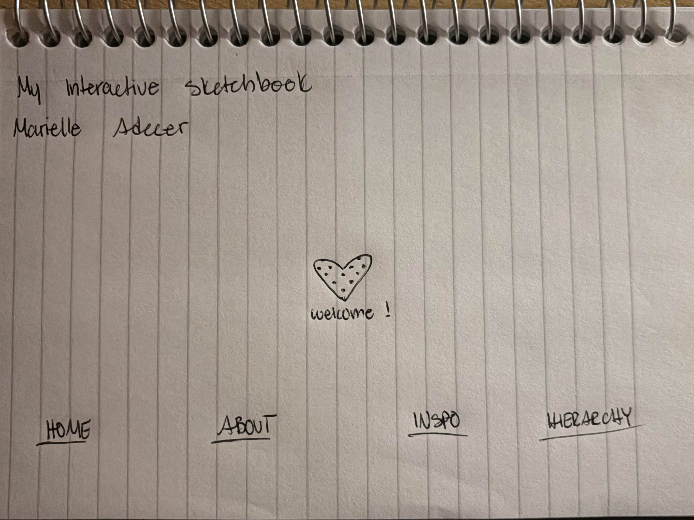

The idea I picked from the reading was having my IA first, then figuring out navigation. I did this by having my pages ready with the information I wanted on them. Once that was finished, I started my navigation by naming each site according to what the information was. This made it so users could find where to click to go to a specific page. I decided to put the "about me" next to the home page, so users can get to know a bit about me first before going into my work. Then I put the Inspiration page, followed by the Hierarchy page. I would say the difficult thing was having to change each of the navigation codes to allow me to exit and enter the pages from each site. I would say the part of my current structure that feels unresolved is my entry page. I would want it to open to a minimalistic design that allows you to move to different pages from there. I think It's always nice to start with something simple so the user doesn't get lost or confused on where to go from there. So I think I'll need to start changing that as I go with this project.